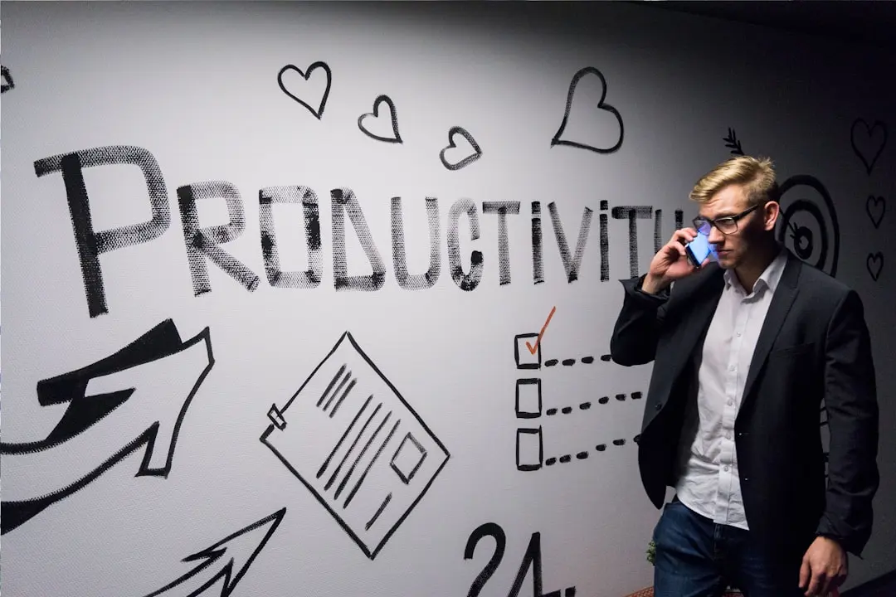

Wisata Alam Indonesia: Surga yang Tak Pernah Habis untuk Dijelajahi
Dipublikasikan pada 20 September 2023
Di zaman modern, generasi muda menghadapi tantangan besar dalam menjaga fokus dan produktivitas. Media sosial, game online, hingga notifikasi pesan yang tiada henti bisa menjadi gangguan yang membuat waktu terbuang sia-sia. Namun, dengan strategi yang tepat, teknologi justru bisa menjadi alat bantu yang efektif untuk meningkatkan efisiensi. Salah satu teknik populer yang bisa digunakan adalah Pomodoro Technique, yaitu bekerja selama 25 menit penuh tanpa distraksi, kemudian mengambil istirahat singkat 5 menit. Metode ini terbukti membantu meningkatkan konsentrasi dan mengurangi rasa jenuh.
Selain itu, membuat daftar prioritas harian sangat penting agar kegiatan lebih terarah. Dengan menuliskan tugas utama yang harus diselesaikan lebih dahulu, seseorang bisa terhindar dari rasa kewalahan. Menggunakan aplikasi manajemen waktu atau kalender digital juga bisa menjadi solusi praktis. Generasi muda perlu mengingat bahwa produktivitas bukan berarti bekerja tanpa henti, melainkan mampu menyeimbangkan antara bekerja, belajar, dan istirahat. Dengan cara ini, era digital dapat menjadi kesempatan emas untuk berkembang, bukan sekadar sumber distraksi.
